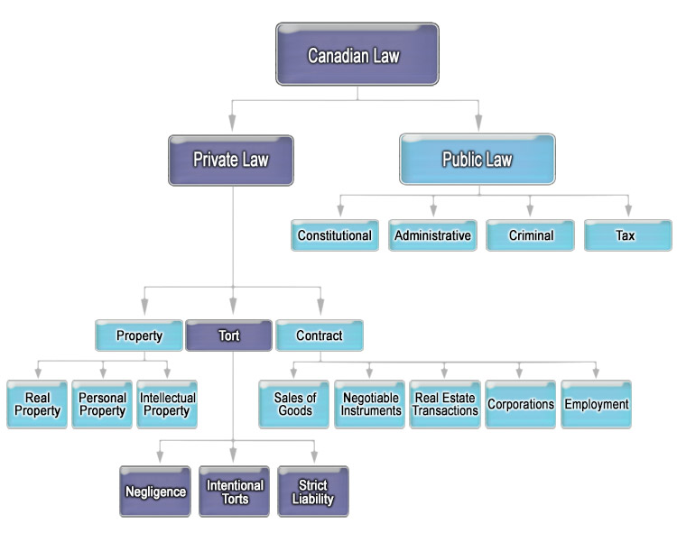

An introduction
Overview
Readings
- Philip H Osborne, The Law of Torts, 6th ed. (Toronto: Irwin Law, 2020), pp 1-24.
- A M Linden, "Tort Law as Ombudsman." Canadian Bar Review 51.1 (1973): 155-168
Module Content
Topic 1: What is a "Tort"?
A tort has come to mean a type of civil wrong.
In the practical sense for lawyers a “tort” is a private case where someone sues someone else. It generally starts when an individual, group of individuals or a corporation have a legal dispute. This is different from public law, which involves the state (government) and issues relevant to the whole of society (criminal law, tax law, constitutional law, etc.).
For our purposes in this course we are looking at private cases involving torts and negligent action, intention to harm or some strict liability that results in some demand for a remedy or compensation.
The largest area of tort law is the law of negligence, which we focus on in the first part of this course. Other areas of tort law that involve intentional torts and strict liability are covered in later modules.
Topic 2: Tort Law vs Other Areas of Canadian Law
Sketch of Canadian law’s categories:

Tort law is distinguishable from the following:
-
Criminal law: an area of public law. There is some overlap between criminal law and tort law, in the sense that the same set of facts may give rise to both a criminal charge and tort law dispute. Consider the infamous O.J. Simpson case, which generated both a criminal charge of murder (public) and a tort dispute for wrongful death (civil). But in the criminal case, the state would prosecute the offender on behalf of society. The purpose of any sentence would be to punish the offender, and any fine ordered would be payable to the state. In the civil case, the state is not involved (except passively, through the judge). The wronged person sues the offender on the person’s own behalf, and receives monetary compensation if successful.
-
Administrative law: Public law. There is likewise overlap between tort law and the rules government sets for how individuals and businesses act (e.g., environmental regulations) and tort law. Indeed, legislation that creates obligations or sets standards for doing certain activities is often used in tort litigation, as we will see later this term. But they are separate areas of law, with distinct consequences. And, as with all areas of public law, it is the state that enforces regulatory law, whereas it is private persons who enforce tort law by taking claims to court.
-
Contract law: Private law. Contract law deals with the rules surrounding "agreements" made between parties. Torts can arise in the context of contractual settings (in fact, the two areas often overlap), but the rules are distinct.
-
Property law: Private law. Property law is concerned with the ownership and use of property and is distinct from tort, although as mentioned in the text, the tort of trespass to land is one area where the two areas of the law intersect.
-
Law of equity: Private law. The laws of equity are those rules developed by the old English Court of Chancery (also referred to as the Court of Equity). This court and the rules it developed were a response to what were considered inadequacies in the common law. They were a way for the court to provide remedies that would otherwise not be allowed under the common law. The rules of equity concerned for the most part property law and contract law. They had very little impact on tort law.
Brief History of Tort Law
Under the English common law, parties were not able to bring suit against another party without permission of the King or Queen, through the issuance of a legal document known as a writ. The readings mention the two different writs that were important to the development of tort law: the trespass writ (“trespass vi et armis”), and the case writ (“trespass on the case”). The trespass writ related to direct injuries to person or property (for example, where one person hits another). The case writ dealt with injuries that were caused indirectly.
Legislation abolished the writ system in the 1870s, but the rules developed under that system have influenced the new torts that replaced the writs, as we will see at various points in the term. One important difference between the writ system and the current catalogue of torts is that torts today are based, for the most part, on various notions of fault, and not on how the injury was caused.
The intentional torts (battery, assault, false imprisonment, etc.), which we cover later in this course, originated in the trespass writ. Negligence law, which we cover first, emerged from the case writ.
Topic 2: Practice Question
What are the two writs that were important to the development of tort law? (choose all that apply)
- trespass writ
- chattel writ
- lands writ
- case writ
Topic 3: Canadian Tort Law Categories
We can divide modern tort law into four categories of action:
- negligence,
- the intentional torts,
- strict liability, and
- a residual group of actions based on unique principles of liability.

There is also an additional type of liability: absolute liability. Absolute liability is liability without fault, where people are held liable simply because they committed the act. It has nothing to do with one’s intentions or fault. Today, there are no absolute liability torts.
Topic 4: Tort Law's Objectives
In summary, some of the functions of tort law include:
-
Justice: Corrective justice, requiring victims to be compensated for unjustified losses, is most often said to underpin tort law. It involves “moral wrongdoing for which the offender must pay.” But there are contrary views to this classic statement, from a case we will soon read (Donoghue v Stevenson, quoted in chapter 1 near the top of page 14).
-
Compensation: This is perhaps the other leading view, and one that does not focus on “justice”: One of the main goals of tort law is to compensate victims for their losses, based someone else caused those losses. It does not require wrongdoing on the part of the defendant, but rather ensures that the victim is compensated for losses suffered.
-
Appeasement: This function of tort law is related to the idea of psychological satisfaction, in that the victim can be comforted and achieve mental healing through public vindication of the victim’s rights.
-
Deterrence: Deterrence here includes both specific (the tortfeasor/wrongdoer) and general (society at large) deterrence. However, there is a debate in the legal world on how much of a deterrent effect the tort system actually provides. In some areas tort law has been more effective as a deterrent, while weaker in others. (see Trebilcock, “The Efficacy of the Tort System and Its Alternatives: A Review of Empirical Evidence).
-
Punishment: In limited cases the court can award punitive damages against the tortfeasor (the person who committed the tort, who would be the defendant in a tort lawsuit), over and above any compensation for injuries.
-
Loss allocation: Various economic theories for allocating losses in tort cases are described briefly in the text. None of these theories have been adopted in Canada. Note in particular the "market deterrence" theory, which has been adopted in the U.S. in the context of manufacturers’ liability. Manufacturers are held strictly liable for injuries caused by their defective products. This has the effect of raising prices, which has the effect of reducing demand and consumption. Fewer injuries are caused. Through the allocation of accident costs, tort law has achieved a safer market place (i.e., fewer accidents).
-
Ombudsman: Under this analysis, tort law may be used to highlight and “cure” systemic abuses of government, corporate agencies and other entities through the publicity of a lawsuit.
-
Empowerment of the injured: This is a more recent, idealized view of tort law raised by Linden, which goes even beyond his “ombudsman” argument. It encompasses compensation, compliance, education, and psychological satisfaction to provide empowerment to the injured party.
Topic 4: Practice Question
Which objective of tort law fits best with the concept of punitive damages?
- justice
- punishment
- compensation
- No answer text provided.
In limited cases the court can award punitive damages against the tortfeasor (the person who committed the tort, who would be the defendant in a tort lawsuit), over and above any compensation for injuries. Punitive damages are meant to punish a tortfeasor for any conduct that is particularly heinous or malicious in nature. It may serve a function in deterring similar future actions by other similarly placed individuals.
Topic 5: Tort Law and Society
The McDonald’s case (Lieback v McDonald’s, No. CV 93 02419, 1995 WL 360309 Bernalillo County, N.M. Dist. Ct. Aug. 18, 1994) raises questions of the role of tort law in a variety of areas.
- Most obviously, what is the place of tort law in compensating for damages resulting from what should be a very ordinary act, i.e. ordering a cup of coffee.
- It raised questions on the conduct of McDonald’s in refusing to initially discuss any settlement until they faced the prospect of public liability in court and a large damage award.
- Others have raised questions on the conduct of Lieback and whether she should have known that the coffee was hot.
- However the temperature of the coffee that burned her was very much above normal household coffee temperatures and arguably represented a hazard that needed some sort of warning label, at the very least.
Another example of tort law both influencing and reflecting societal values are the civil lawsuits launched against the Government of Canada and various Church entities regarding alleged abuses at Government and Church run Indian Residential Schools.
In his reasons for certifying the application in B.C. (Quatell v. Attorney General of Canada, 2006 BCSC 1840), Brenner C.J. provided a very concise statement on the purpose and impact of the Settlement Agreement in the context of the litigation and law regarding certain otherwise statute barred claims:
[7] This settlement represents a compromise of disputed claims. For that reason it is undoubtedly the case that claimants will not be happy with every provision of the settlement. Some might well choose to reject it. However, those members of the class who decide that the disadvantages of the Settlement Agreement outweigh its advantages are free to opt out of the provisions of the Class Proceedings Act and pursue their individual claims against the defendants. If they choose to opt out, nothing in this class proceeding will affect them or any actions they may choose to bring. In my view, the opt out right supports approval of the agreement.
[8] Another factor favouring approval of the agreement is the Common Experience Payment (“CEP”). This may be claimed by any class member solely on the basis of attendance at an Indian Residential School. They do not have to prove that they suffered any injury or harm; they are only required to establish the fact of their attendance.
[9] A repeated theme in these cases is the effect that attendance at Indian Residential Schools had on the language and culture of Indian children. These were largely destroyed. However, no court has yet recognized the loss of language and culture as a recoverable tort. Even if such a loss was actionable, most claims would now be statute barred by the Limitation Act, R.S.B.C. 1996, c. 266. The CEP can therefore be viewed, at least in part, as compensation for a loss not recoverable at law. In my view, this represents an important advantage to the class.
[10] The class members who wish to also advance a claim for serious physical or sexual abuse can choose to participate in the Independent Assessment Process (“IAP”). The IAP should provide a fair and expeditious means of having these claims assessed and paid. Since most claims for abuse of a non-sexual nature are also statute barred under B.C. law, the IAP offers a recovery mechanism not otherwise available to the class members in this province.
Discussion: Module 1 - Topic 5
For discussion, read the following: Linden, A. M. “Tort Law as Ombudsman.” Canadian Bar Review 51.1 (1973): 155-168.
After reading the article, please consider the following questions:
- Do you agree with Linden’s general thesis that the “publicity sanction” is a remedy available to “ordinary citizens”? Why/why not?
- Given that Linden wrote this article in 1973, in your opinion has the function of Tort Law as a “watchdog” been more or less effective in the last 40 years? Please consider this within the context of Canada and oversight of medical and police personnel and government institutions.
Q1:
In Tort Law as Ombudsman, A.M. Linden argues that tort law functions as an informal but powerful remedy for ordinary citizens by acting as a watchdog over both public and private institutions. In a period marked by public distrust of bureaucracy and limited access to formal oversight mechanisms, Linden suggests that tort law fills a critical accountability gap. Unlike government ombudsmen, which are often overburdened and confined to supervising public authorities, tort law is accessible to individuals and applies broadly to private corporations, professionals, and state actors alike.
Central to Linden’s argument is the idea of the “publicity sanction.” Even where financial damages are modest or absorbed by insurance, the public exposure generated by a tort lawsuit can exert significant pressure on defendants. Litigation brings alleged wrongdoing into the public eye, potentially triggering consumer backlash, loss of investor confidence, reputational harm, and even regulatory or legislative intervention. Because modern institutions are highly sensitive to public perception, this reputational risk can be far more consequential than predictable fines or damage awards.
I agree with Linden that tort law could be a particularly effective tool in this role because it is citizen-driven. Individuals do not need to rely on prosecutors, regulators, or political will to initiate oversight. They can commence an action themselves and force powerful actors to justify their conduct in an open forum. In this way, tort law empowers ordinary citizens to discipline abuses of power through transparency and public scrutiny, making it a flexible and decentralized mechanism of social control when other forms of accountability fall short.
Q2:
Since Linden wrote in 1973, the watchdog function of tort law in Canada has been both strengthened and reshaped. The adoption of the Canadian Charter of Rights and Freedoms, the development of administrative law, and the creation of specialized tribunals and self-governing professional bodies have significantly expanded institutional oversight. As a result, tort law is no longer the primary mechanism for accountability in many areas.
However, tort law remains indispensable as a gap-filling tool. In the medical context, professional colleges and regulatory bodies now handle discipline and standards of care, but malpractice actions still provide individual redress and public scrutiny where regulatory processes fall short. Even unsuccessful claims can expose systemic issues and reinforce professional caution through publicity.
The same is true in policing. Civilian oversight bodies and Charter remedies have improved accountability, yet tort claims for false arrest, assault, or negligent investigation continue to play a crucial role by forcing police conduct into a public forum and creating institutional and reputational consequences.
More broadly, while administrative law and tribunals now dominate government oversight, tort law remains essential where administrative remedies are unavailable, inadequate, or overly deferential. Although its role may be less central than in 1970’s, tort law continues to function as an effective watchdog by filling oversight gaps and empowering individuals.
Summary
The basic premises of tort law continue to be debated. This debate helps to cause them to shift, through changes in case law and through legislation.
Tort law has adapted to reach creative solutions to enormous legal complexities such as the historic class action proceedings leading to the residential school settlement agreement.
This module has provided an introduction to the conceptual definition and elements of a Tort, comparing Tort Law to other Canadian Law and providing an overview of Tort Law’s role in society.
Textbook Summary
(1) Criminal Law and Tort Law Contrasted
The characteristics of the criminal process are distinct from those of the tort process in three important ways.
- First, the main function of the criminal law is to punish those who have committed offences under the Criminal Code. The punishment is designed to prevent a repeat offence by the defendant and to deter other citizens from similar anti-social conduct. Consequently, the criminal process focuses primarily on the offender, his conduct, and if he is found guilty, an appropriate punishment. The focus of tort law is primarily on those who have suffered injury or damage as a consequence of either criminal or non-criminal conduct and their interest in receiving compensation for their losses.
- Second, the administration of the criminal justice system is a community responsibility. Prosecutions are brought, almost exclusively, by a branch of government. Tort litigation is brought at the initiative, and at the expense, of the person who has suffered the loss. The reason for governmental involvement in the administration of the criminal law is that the maintenance of public order and safety has a much higher social priority than the compensation of persons who have suffered injuries or damage.
- Third, the burden of proof in criminal law is a heavy one. The prosecutor must establish the guilt of the accused beyond a reasonable doubt. This high standard of proof is appropriate given the emphasis of the criminal law on punishment and the accused person’s possible loss of freedom upon conviction. The emphasis on compensation in tort law supports the use of the civil burden of proof that requires the plaintiff to prove their case on the balance of probabilities. The plaintiff must show only a 51 percent likelihood that the facts of the case are as they allege.
(2) The Tort Litigation
These various functions are commonly referred to as compensation, punishment, deterrence, accountability, corrective justice, appeasement, vengeance, and education. They are all legitimate functions of tort law.
Nevertheless, it is important not to lose sight of the fact that the dominant motivation of most plaintiffs is to secure financial compensation.
Defendants in tort litigation must be worth suing. Defendants worth suing fall into three categories:
- people or institutions with liability insurance14 that permits the cost of the judgment to be spread among all of those who purchase liability insurance from the defendants’ insurers (insured defendants);
- large corporations or governmental institutions that are able to absorb the cost of judgments by spreading it through the price of the goods and services they produce or, in the case of government, by spreading it through taxation (self-insured defendants); and
- uninsured persons or corporations who have personal wealth or assets sufficient to pay the judgment (defendants with means).
A corporation can be found liable for the wrongdoing of its employees on two grounds.
- First, if the corporation, as employer, fails to select, train, supervise, or control its employees with due care, it may be found personally liable to those who suffer loss as a consequence of that failure to exercise care.
- Second, the corporation may be found liable on the basis of vicarious liability. It is well established that an employer who is free from personal fault, is, nevertheless, vicariously liable for the torts of its employees, if the torts are committed within the scope of their employment.
Punitive damages are an additional sum of money designed to punish the defendant when his conduct has been particularly vicious, premeditated, high-handed, or disgraceful.
That tension is between the compensatory aspect of tort law, which emphasizes the plaintiff and her need for recompense, and the aspect of tort law that stresses the personal responsibility of wrongdoers and tries to integrate compensatory concerns with notions of deterrence, punishment, and accountability. ... Compensatory and loss distribution objectives were achieved by imposing liability on the corporation, but the attainment of other goals was thwarted because the primary wrongdoers, the bouncers, were left unaccountable.
THE ELEMENTS OF CANADIAN TORT LAW
It requires intentional conduct that causes bodily interference. In combination, they are actionable. Tort law is, in large part, constructed on various combinations of these two elements and the causal link between them.
(1) The Nature of the Defendant’s Conduct
Tort law, therefore, classifies the conduct of defendants in a way that permits a line to be drawn between wrongful and innocent conduct. In general, three concepts perform this task: intention, negligence, and accident.
Conduct is intentional when the defendant desires its consequences.
Conduct is negligent when the defendant creates a reasonably foreseeable and substantial risk of its consequences.
Conduct is accidental when the defendant neither desires its consequences nor creates a foreseeable and substantial risk of its consequences.
As a general rule, proof of intentional or negligent conduct is an essential component of tort liability. “No liability without fault” is a maxim that continues to command substantial judicial and public support. There are only a few torts where liability extends to accidental conduct. These torts are known as torts of strict liability.
(2) The Nature of the Plaintiff’s Loss
... tort law must draw lines between compensable and non-compensable damage. The cases of Hinz v Berry and Star Village Tavern v. Nield, 1976 CanLII 1466 (MB KB) provide good illustrations of the kind of line-drawing that is an essential part of the law of torts.
In Hinz, the line between compensable and non-compensable psychiatric injury was drawn between psychiatric illness and the more transient and minor emotional distress that formed the basis of the other claims.
The Hinz dichotomy between recognizable psychiatric illness and mental distress was adopted uniformly by Canadian courts in the twentieth century. However, in 2008, the Supreme Court introduced a different dichotomy between “serious and prolonged mental disturbance” (compensable) and “ordinary annoyances, anxieties and fears that come with living in a civil society” (non-compensable).
In Star Village Tavern, courts have approached claims for pure economic loss (business profit) with a great deal of caution. Where to draw the line in respect of economic losses is a continuing problem in the law of torts and it remains to be finally resolved. The plaintiff in Star Village Tavern did not recover its economic losses.
D. THE OBJECTIVES OF TORT LAW
(1) The Moralist View
The moralist approach explains tort law as a system of corrective justice based on the ethical principle of personal responsibility for damage caused by wrongdoing.
Tort law is, on this view, grounded in a simple and elegant moral imperative: personal accountability for the consequences of one’s wrongful actions. It protects individual liberty by defining our rights against the wrongful interference of others with our person, property, and other recognized interests.
(2) The Instrumentalist View
(a) Compensation
The most important function of tort law is to provide compensation for losses caused by conduct that the courts regard as below societal standards. Tort law is designed to restore the plaintiff to the position that she would have been in if the tort had not been committed.
The compensatory power of tort law has been enhanced dramatically by liability insurance. Liability insurance not only protects the defendant from the adverse financial consequences of being held liable in tort, but it also guarantees, to the great advantage of successful plaintiffs, that judgments and settlements within the scope of the defendant’s policy will be paid.
(b) Punishment
An award of damages is not only designed to compensate the plaintiff. It also acts as a sanction on the defendant. The punitive power of tort law is diminished to a large degree by liability insurance but there are circumstances where it continues to operate with some vigour.
(c) Deterrence
By imposing liability for wrongful conduct, it hopes to deter both the defendant and other members of society from acting in a similarly dangerous manner in the future. Three theories of deterrence contribute to the accident prevention role of tort law: specific deterrence, general deterrence, and market deterrence.
(d) Psychological Dimensions
Tort law provides a civilized and non-violent way to allow the victims of wrongdoing to secure some appeasement, retribution, and accountability for their suffering.
(e) Education
Tort law has both a general and a specific educational role. The tort system speaks generally to citizens of the importance of compliance with reasonable standards of conduct in the interests of the safety of others. Tort law also has a specific educational role. A court may be called upon to address a particularly contentious issue affecting a small group, to rule on the current practices of a profession or industry, to determine liability in a novel circumstance, or to rule on a test case that challenges the behaviour of a public or private institution.
(f) The Ombudsperson Role
The role of tort law as ombudsperson has been identified and promoted by Linden J. He has pointed out that tort law is well placed to challenge the wrongful and harmful behaviour of the most powerful persons and institutions in Canada. In these situations, the accountability and sanctions of tort law may be advantageous because tort litigation can be initiated by private individuals and it is adjudicated by judges who are independent of political control.
E. PERSONAL INJURY, TORT LAW, AND OTHER COMPENSATORY VEHICLES
A fault system can never provide universal coverage and compensation for all accident victims. It is designed to compensate only those who have been injured as a result of wrongdoing. Those who suffer personal injury as a result of a defendant’s innocent conduct, their own carelessness, or bad luck are beyond the scope of conventional tort remedies.
The limitations and shortcomings of the tort process have led to two contrasting developments.
- First, there were a number of governmental initiatives throughout the course of the twentieth century creating alternative or supplementary compensatory vehicles designed to provide compensation to a broader range of accident victims.
- Second, the incomplete coverage of both tort and social welfare systems has led to a much greater use of private sector first-party insurance instruments tailored to individual circumstances for the protection of personal financial security.
Lawyers tend to regard tort law as having central importance in the field of accident compensation. It is in fact a minor player whose importance continues to diminish. This perspective is essential to understanding and evaluating the place, role, and future of tort law in the field of personal injury and fatality compensation.
F. THE ORGANIZATION OF TORT LAW
This book adopts the third option, but it begins with negligence and then deals with the intentional torts before it turns to the torts of strict liability.
The tort of negligence ... is not only of central importance in its own right, but it also exerts a powerful influence on all other areas of tortious liability.
Although the torts of nuisance and defamation may be considered torts of strict liability, they are given discrete consideration. Nuisance is, in fact, a confusing mixture of negligence and strict liability concepts, and defamation, the most technical of all the torts, is replete with unique concepts and principles.